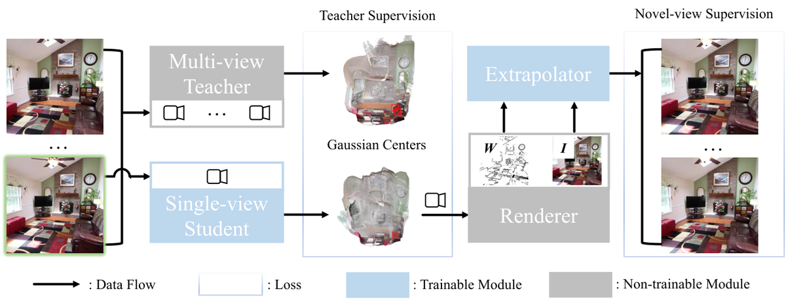

studentSplat
简单摘要
前馈 3D 高斯分布的最新进展已经实现了显着的多视图 3D 场景重建或单视图 3D 对象重建，但单视图 3D 场景重建仍处于探索之中，因为。为了克服单一输入的小说视图监督中固有的尺度模糊性和外推问题，我们引入了两种技术。

深度学习的进步通过使用大量视图的每个场景优化，在 3D 重建方面取得了显着进展。最近，人们提出了高效的前馈方法来获取一组稀疏的输入视图并构建 3D 重建，从而大大提高了效率。
核心创新
第一，为了克服单一输入的新颖视图监督中固有的尺度模糊性和外推问题，我们引入了两种技术。
第二，大量实验表明，studentSplat 实现了最先进的单视图新颖视图重建质量，并且在场景级别的性能与多视图方法相当。
第三，我们采用多视图 3DGS 教师网络来提供几何监督，采用新颖的视图来提供光度监督，并采用外推器网络来完成缺失的上下文。
技术细节
我们采用多视图 3DGS 教师网络来提供几何监督，采用新颖的视图来提供光度监督，并采用外推器网络来完成缺失的上下文。为了构造良好的 3D 高斯并最小化扭曲，我们还需要鼓励局部结构的一致性。此外， 的存在允许学生模型通过为置信度较低的区域生成较低的不透明度来平衡重建的完整性和置信度。

3.1 前馈 3D 高斯分布
在多视图 3DGS 中，我们有稀疏视图图像 、 ( ) 及其相应的相机投影矩阵 ，其中 、 和 是固有矩阵、旋转和平移矩阵。多视图 3DGS 模型（其中 是视图数量）使用以下方法将图像映射到 3D 高斯参数。 另一方面，宽松版本（单视图 3DGS 模型）执行以下操作。与多视图 3DGS 模型不同，单视图 3DGS 模型更容易出现尺度模糊和外推问题。
3.2 师生模式
为了构造良好的 3D 高斯并最小化扭曲，我们还需要鼓励局部结构的一致性。因此，我们只需要一个输入视图，换句话说，我们放宽了对多个输入视图及其相应相机位姿的要求，来执行3D重建。更重要的是，生成的模型自然地可以作为单视图深度估计模型，将 3D 重建任务与单视图视觉任务连接起来。
3.3 外推法
我们不是直接监督光栅化的新颖视图，而是通过网络进一步处理新颖视图重建，并使用光度损失监督输出。此外， 的存在允许学生模型通过为置信度较低的区域生成较低的不透明度来平衡重建的完整性和置信度。
$$ f^{K}_{\bm \theta}: \{ ({\bm I}^{i}, {\bm P}^i) \}_{i=1}^K \mapsto \{(\bm{\mu}^j, \alpha^j, \bm{\Sigma}^j, \bm{c}^j )\}^{H \times W \times K}_{j=1}. $$
这条式子给出了论文中的一条核心计算关系。理解时可以先看左侧最终想得到什么结果，再看右侧的 f、K、bm、theta 等量如何共同决定这个结果在方法链路中的作用。
$$ f^1_{\bm \theta}: {\bm I^i} \mapsto \{(\bm{\mu}^j, \alpha^j, \bm{\Sigma}^j, \bm{c}^j )\}^{H \times W \times 1}_{j=1}. $$
这条式子给出了论文中的一条核心计算关系。理解时可以先看左侧最终想得到什么结果，再看右侧的 f、bm、theta、bm 等量如何共同决定这个结果在方法链路中的作用。
$$ \mathcal{L}_{studentSplat}=\underbrace{\mathcal{L}_{geo}+\mathcal{L}_{grad}}_{\text{Teacher supervision}}+\underbrace{\mathcal{L}_{photo}}_{\text{Novel-view supervision}}. $$
这条式子给出了论文中的一条核心计算关系。理解时可以先看左侧最终想得到什么结果，再看右侧的 L、studentSplat、underbrace、L 等量如何共同决定这个结果在方法链路中的作用。
实验结论
实验部分主要围绕 为了评估几何质量和作为自监督深度估计方法的潜力，我们使用 DA-2K 和 DIODE 的室内和室外注释 展开。结果表明，此外，我们的 StudentSplat 实现了最佳的单视图 3DGS 性能，并且尽管仅使用一个输入视图，但仍与多视图模型相当。
| Ablation Module | Setup | PSNR | SSIM | LPIPS |
|---|---|---|---|---|
| Gray | GrayFinal | Gray24.98 | Gray0.794 | Gray0.156 |
| Extrapolator | +w/o Composition | 24.85 | 0.792 | 0.158 |
| +w/o Extrapolation | 21.38 | 0.741 | 0.208 | |
| Supervision | +w/o Gradient Matching | 21.57 | 0.741 | 0.211 |
| +w/o Teacher | 22.13 | 0.757 | 0.195 |
| [0pt]Method | [0pt]tabular[x]@c@Views | |
|---|---|---|
| (#) | ||


4.1 设置
实验部分主要围绕 这两个数据集包含多个视图以及使用针对不同室内和室外场景的运动结构算法生成的相应相机姿势 展开。结果表明，为了评估几何质量和作为自监督深度估计方法的潜力，我们使用 DA-2K 和 DIODE 的室内和室外注释。
4.2 定量比较
实验部分主要围绕 为了与当前最先进的（SOTA）方法在没有 3D 注释的 3D 场景重建性能上进行定量比较，我们按照以前的工作来评估新颖视图重建 展开。结果表明，此外，我们的 StudentSplat 实现了最佳的单视图 3DGS 性能，并且尽管仅使用一个输入视图，但仍与多视图模型相当。
4.3 定性比较
实验部分主要围绕 在本节中，我们的目标是在外推性能、失真和重建质量方面可视化所提出的 StudentSplat 展开。结果表明，深度估计和与稳定扩散集成以生成文本到 3D 的定性比较在附录中。
4.4 消融研究
实验部分主要围绕 在这项消融研究中，我们的目标是通过迭代删除提议的模块来评估每个提议的模块如何对模型的性能做出贡献 展开。结果表明，因此，我们对模块进行定量和定性评估。
4.5 讨论与结论
实验部分主要围绕 我们的方法依赖于教师模型，因此继承了教师模型的局限性 展开。结果表明，消除对教师模型的需要以进一步提高单视图场景级 3DGS 的能力将会很有趣。
理解评价
如果把这篇论文放回问题背景里看，它真正的价值在于：前馈 3D 高斯分布的最新进展已经实现了显着的多视图 3D 场景重建或单视图 3D 对象重建，但由于单视图中继承的模糊性，单视图 3D 场景重建仍未得到充分探索。这说明作者不是只补一个局部模块，而是在重新组织问题该怎样被解决。
最能支撑这个判断的，还是实验给出的证据：我们提出了 StudentSplat，一种用于场景重建的单视图 3D 高斯分布方法。换句话说，这些设计并不只是概念上更完整，而是实实在在改变了最终结果。
当然，它离真正成熟的方案还有距离：当前方案的主要局限在于它仍然受到计算资源、输入质量或场景复杂度的约束，离真正大规模稳定部署还有距离。后续更值得继续推进的方向，是 后续更值得继续推进的方向，是未来继续提升效率、泛化能力以及在更复杂场景下的稳定性。